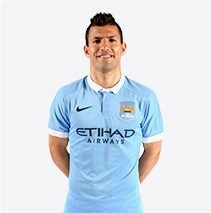
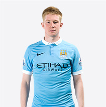

Manchester City founded in 1894 are an English football team currently playing in the English Premier League.
The last five years have seen Manchester City claim all of English football’s major domestic trophies, as well as establishing them as a major force on the European stage.
Manchester City have some of the greatest players in the world who combine together to create beautiful football, these players include; Sergio ‘Kun Aguero’, Joe Hart, David Silva and Kevin De Bruyne
President Xi Jinping, visited the City Football Academy on October 23rd, home to Manchester City Football Club and headquarters of its global football organisation, City Football Group.
Manchester City FC is part of City Football Group – a global network of football clubs, including New York City FC, Melbourne City FC and Yokohama F Marinos
KEY PLAYERS
-
阿奎罗SERGIO
AGUEROARGENTINIAN10 -
德布劳内KEVIN
DE BRUYNEBELGIAN17 -
 席尔瓦DAVID
席尔瓦DAVID
SILVASPANISH21